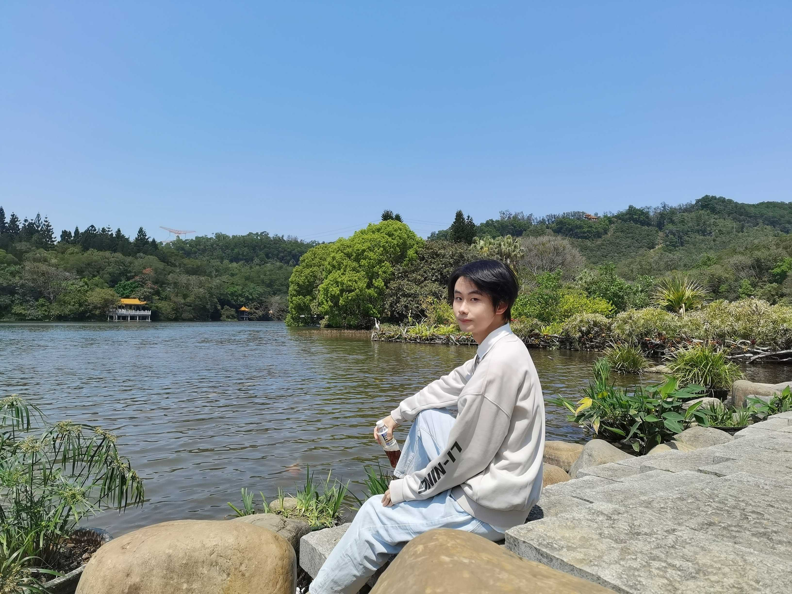

Popular Culture and Digital Consumption
A project exploring how popular culture circulates across digital platforms and how users participate in contemporary forms of cultural consumption.
Read moreAcademic Portfolio
Master's student in Management exploring culture, media, and digital life.
I am interested in how popular culture, digital media, and games shape contemporary experience. This site introduces my academic background, current interests, and a few personal snapshots beyond research.
Current Focus
Examining how digital platforms and popular media influence meaning-making, participation, and everyday life.
core research interests
About

I am a Master's student in Management at PKU HSBC Business School with interdisciplinary interests in cultural analysis, digital media, and game studies.
My work is broadly concerned with how media and cultural forms circulate, how audiences engage with digital environments, and how games can be studied as meaningful social and cultural objects. I am especially interested in combining management perspectives with interpretive approaches to contemporary media.
Master's student in Management
PKU HSBC Business School
Research
A project exploring how popular culture circulates across digital platforms and how users participate in contemporary forms of cultural consumption.
Read moreA study of how platform design, visibility, and recommendation systems shape the production and reception of digital media content.
Read moreA project considering games not only as entertainment products, but also as sites of narrative, identity, community, and cultural meaning.
Read moreAn emerging research direction focused on how users interpret participation, immersion, and affect across different forms of interactive media.
Read moreHobbies
Following visual storytelling and screen culture as both a personal interest and an extension of media analysis.
Reading across cultural theory, media studies, and contemporary writing that opens new interpretive questions.
Engaging with games as lived experience, cultural form, and a space where narrative and systems meet.
Recording everyday moments, campus scenes, and travel details with a quiet and observational style.
Gallery
'/><circle cx='150' cy='120' r='48' fill='%23f4f0d7'/><rect x='120' y='220' width='560' height='210' rx='20' fill='%2396af93'/><rect x='170' y='170' width='150' height='200' rx='20' fill='%23f8f6ef'/><text x='400' y='500' text-anchor='middle' font-family='Arial' font-size='34' fill='%2341543f'>Campus Placeholder</text></svg>)
'/><path d='M0 390 Q200 250 400 380 T800 360 V560 H0 Z' fill='%23bf9a80'/><circle cx='620' cy='150' r='58' fill='%23fff2de'/><text x='400' y='500' text-anchor='middle' font-family='Arial' font-size='34' fill='%235b4638'>Travel Placeholder</text></svg>)
'/><rect x='120' y='110' width='560' height='340' rx='28' fill='%23ffffff'/><rect x='180' y='180' width='200' height='18' rx='9' fill='%2397a8c8'/><rect x='180' y='230' width='320' height='18' rx='9' fill='%23b4bfd8'/><rect x='180' y='280' width='250' height='18' rx='9' fill='%23c7d1e5'/><text x='400' y='500' text-anchor='middle' font-family='Arial' font-size='34' fill='%23485571'>Research Placeholder</text></svg>)
'/><rect x='140' y='180' width='520' height='220' rx='30' fill='%23809c98'/><rect x='220' y='140' width='360' height='120' rx='24' fill='%23f7f6f1'/><text x='400' y='500' text-anchor='middle' font-family='Arial' font-size='34' fill='%233e5450'>Campus Life</text></svg>)
'/><path d='M100 390 L250 200 L420 360 L560 170 L700 390 Z' fill='%239c8c79'/><text x='400' y='500' text-anchor='middle' font-family='Arial' font-size='34' fill='%2352463a'>Travel Notes</text></svg>)
'/><rect x='160' y='120' width='480' height='320' rx='24' fill='%23fffdfa'/><rect x='220' y='190' width='120' height='140' rx='16' fill='%23d3b99d'/><rect x='370' y='190' width='180' height='16' rx='8' fill='%239b8266'/><rect x='370' y='230' width='150' height='16' rx='8' fill='%23b49a80'/><rect x='370' y='270' width='110' height='16' rx='8' fill='%23ccb79f'/><text x='400' y='500' text-anchor='middle' font-family='Arial' font-size='34' fill='%2352473c'>Project Board</text></svg>)
Contact